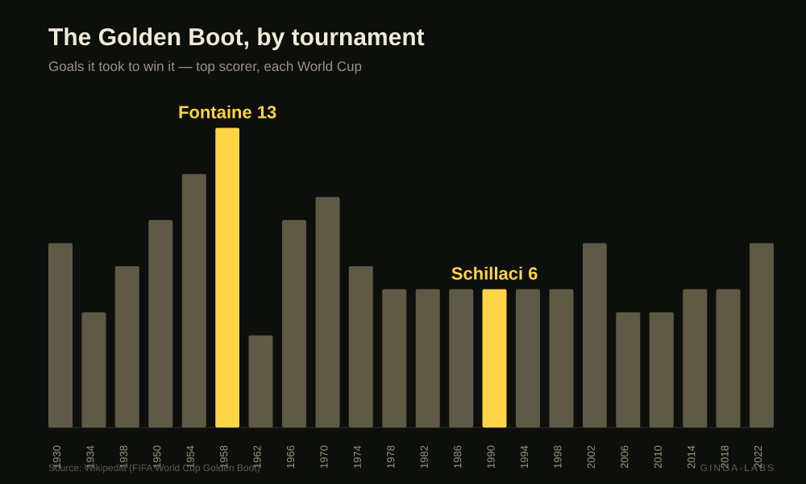
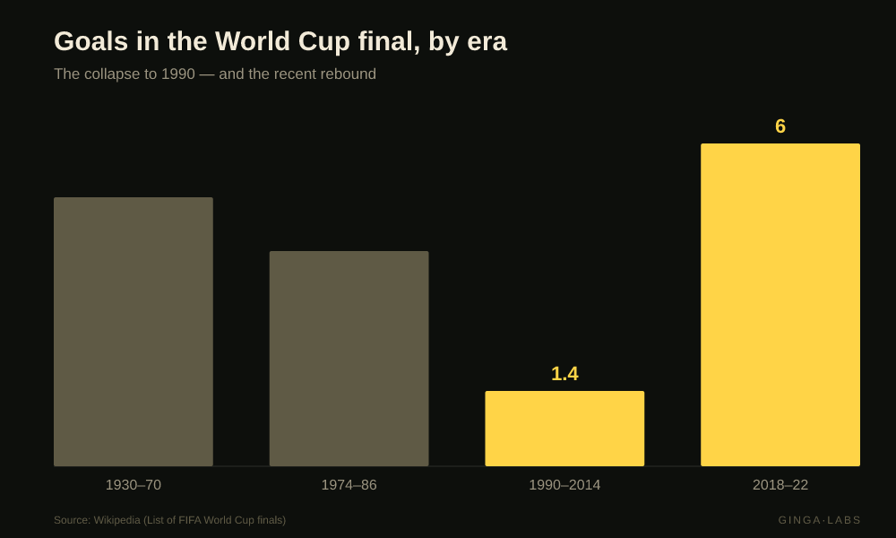

The Era of Not Conceding
Fontaine scored 13. Schillaci won the same prize with 6. The years football forgot how to score — told in the data.
In 1958, Just Fontaine scored 13 goals at a single World Cup — a record no one will ever touch.
In 1990, the same prize was won with 6. By a man who'd played one game for Italy.
Football changed. Here's the data 🧵

Look at it. Fontaine's 13 towers over everything. Then from 1978 to 1998 the Golden Boot is won with exactly 6 — seven tournaments running. The game learned to defend.
It's not just the strikers. Goals in the final collapsed too — and then came back.

The bottom of it all: Italia 1990. Just 2.21 goals a game — still the lowest in World Cup history.
The team that reached the final scored five goals in the whole tournament. That was Argentina — winning two penalty shootouts to get there.
It was so grim that football changed its own rules: the back-pass ban (1992) and three points for a win (1994), built to make negative play stop paying.
But here's what the legend gets wrong: scoring didn't bounce back. Finals stayed 1-0s and shootouts for two more decades. The real rebound only shows up in 2018 & 2022 — a quarter-century later.
The back-pass ban's real legacy wasn't goals. It forced keepers to play with their feet — and quietly birthed the sweeper-keeper and playing out from the back.
The era of not conceding gave birth to its opposite.
What I'm unsure of: the era arc here uses the final + the Golden Boot + the two sourced goals-per-match extremes — a coarse lens. The full tournament-wide goals/game series (the proper test of "did scoring recover?") I don't have yet, so that one's flagged open.
Sources: WC finals · Golden Boot · Italia '90 · Back-pass rule (Wikipedia).
Em português ↓
Em 1958, Just Fontaine fez 13 gols em uma única Copa — um recorde que ninguém vai bater.
Em 1990, o mesmo prêmio foi ganho com 6. Por um homem que tinha jogado uma vez pela Itália.
O futebol mudou. Olha os dados 🧵
Repara. Os 13 do Fontaine dominam tudo. Aí, de 1978 a 1998, a Chuteira de Ouro é ganha com exatamente 6 — sete Copas seguidas. O jogo aprendeu a defender.
E não é só artilheiro. Os gols na final despencaram — e depois voltaram.
O fundo do poço: a Itália 1990. Só 2,21 gols por jogo — até hoje o menor da história das Copas.
O time que chegou à final fez cinco gols no torneio inteiro. Era a Argentina — que venceu dois pênaltis pra chegar lá.
Foi tão feio que o futebol mudou as próprias regras: o recuo proibido (1992) e os três pontos por vitória (1994), pra fazer o jogo negativo parar de compensar.
Mas o que a lenda erra: os gols não voltaram. As finais seguiram 1-0 e pênaltis por mais duas décadas. A volta de verdade só aparece em 2018 e 2022 — um quarto de século depois.
O verdadeiro legado do recuo proibido não foi gol. Obrigou o goleiro a jogar com os pés — e criou, em silêncio, o goleiro-linha e a saída de bola.
A era de não tomar gol deu à luz o seu oposto.
O que eu não sei: a curva aqui usa a final + a Chuteira de Ouro + os dois extremos de gols/jogo já fontados — uma lente grossa. A série de gols/jogo do torneio inteiro (o teste de verdade do "os gols voltaram?") eu ainda não tenho, então essa fica em aberto.
Fontes: finais · Chuteira de Ouro · Itália '90 · recuo proibido (Wikipedia).